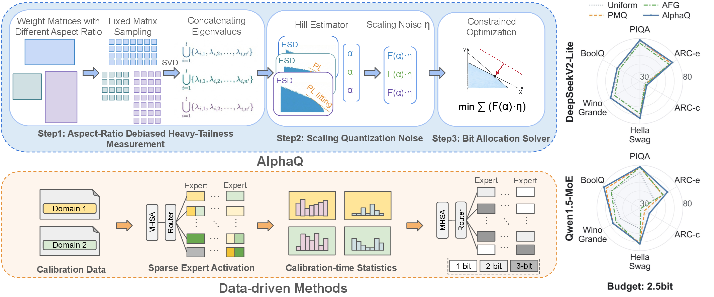
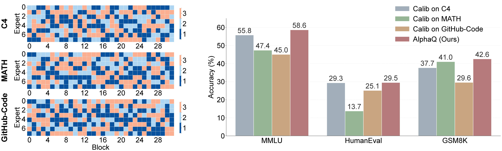
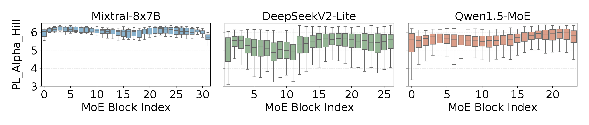
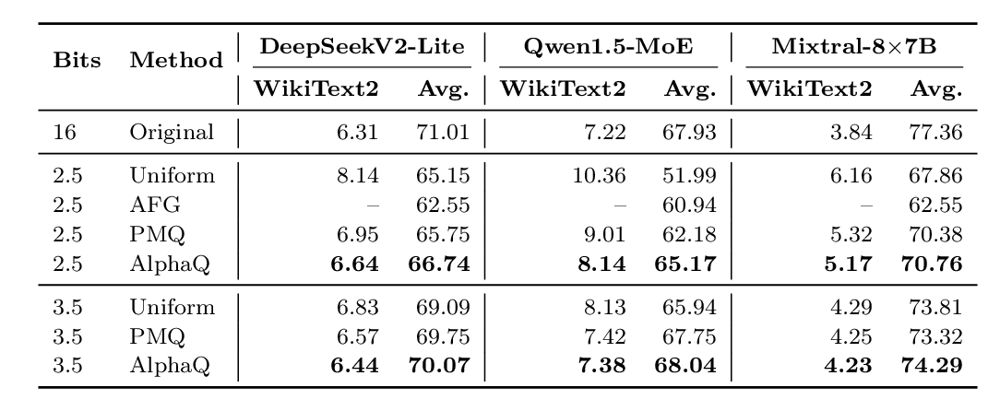
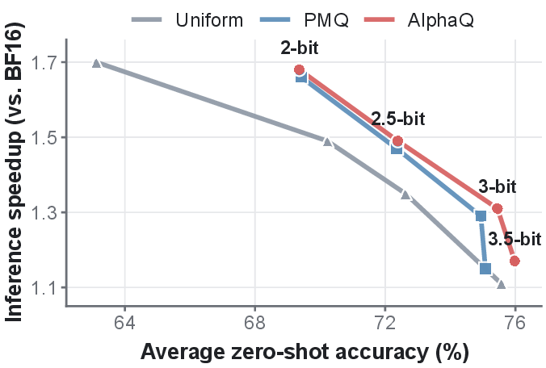
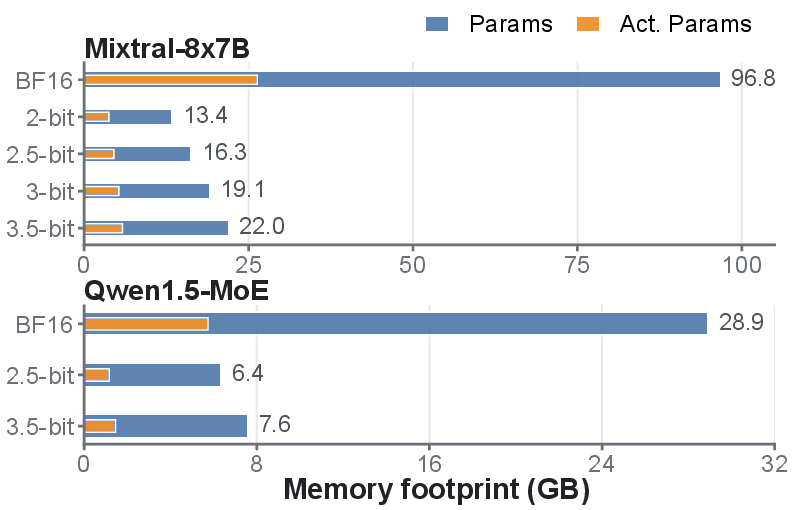

Assigning MoE expert precision from weight-spectrum heavy-tailedness, without calibration data for the bit-allocation stage.

AlphaQ measures heavy-tailedness, scales quantization noise, and solves constrained bit allocation.
PL_Alpha_Hill from expert weight spectra provides a data-free signal for quantization sensitivity.
A budget-constrained solver assigns mixed precision across experts and layers under matched bit budgets.
AlphaQ avoids calibration-set dependence when assigning bits, reducing domain bias in MoE quantization.
The Motivation
Existing data-driven methods estimate expert importance from calibration samples. For frontier MoE LLMs, the training distribution is usually inaccessible, so a calibration set can be an imperfect surrogate.
Different calibration domains induce different bit-width patterns.
Allocation can overfit to the calibration domain and degrade unseen tasks.
The bit-allocation signal comes directly from model parameters.

Domain bias introduced by data-driven bit-width allocation in Mixtral-8x7B.
The Method
Experts with more heavy-tailed weight spectra are treated as structurally more important and receive higher precision, while less sensitive experts can be quantized more aggressively.

PL_Alpha_Hill varies across blocks, layers, and MoE architectures.
Compute PL_Alpha_Hill for expert-layer weight matrices, optionally with FARMS sampling.
Combine alpha-derived importance with bit-width-dependent quantization noise.
Optimize bit assignment under a single global average-bit budget.
Empirical Validation

Results on DeepSeekV2-Lite, Qwen1.5-MoE , and Mixtral-8x7B.
Mixtral-8x7B

Accuracy versus inference speedup relative to BF16.
Mixtral and Qwen1.5-MoE

AlphaQ reduces expert-weight memory under low-bit budgets.
Calibration-free bit allocation avoids coupling MoE quantization to a chosen calibration distribution.
PL_Alpha_Hill provides a global signal for expert and layer heterogeneity across MoE architectures.
Global optimization improves low-bit quality under matched bit budgets while reducing memory footprint.
@inproceedings{
yang2026alphaq,
title={AlphaQ: Calibration-Free Bit Allocation for Mixture-of-Experts Quantization},
author={Wanqi Yang and Yuexiao Ma and Alexander Conzelmann and Xiawu Zheng and Michael W. Mahoney and T. Konstantin Rusch and Shiwei Liu},
booktitle={ICLR 2026 2nd Workshop on Deep Generative Model in Machine Learning: Theory, Principle and Efficacy},
year={2026},
url={https://openreview.net/forum?id=rbE8Pxs8vx}
}